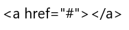
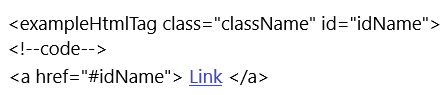
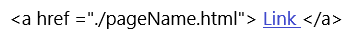
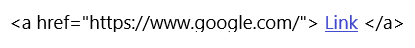

Linking uses an anchor tag.
The content in the quotations after 'href' specify the destination for navigation. So in the example above the "#" indicates that the tag is not directed anywhere. This is often used as a placeholder if the a link is going to be added later, or if you want clicking the 'link' to activate another function other than navigation (like what would be added with JavaScript).
How the destination for an active navigation link is coded depends on where you are navigating to. Another part of the same page, a different page in the same site, or a different site altogether are all coded differently.
Links to another part of the same pageThere are two parts to setting up an anchor tag to navigate within the same page you're currently on: an ID at the destination, and proper specification in the parenthesis after 'href'.
The destination for a link can be set to the 'id' of an element on the same page. IDs can be assigned like classes, but unlike classes they are unique. While many elements may share the same class name only one element can have the same ID name. A page can contain multiple IDs, but they all have to have different names. To link an anchor tage back to an element write "#idName" after 'href'.
Back to Top Links to a different page Links to a different siteLinking to another page in the same site can be done simply by specifying the path in the parenthesis after 'href' like you would to link images, .css files, .js files, etc.
The './' indicates that the path will remain in the same directory (folder) and go to a different file of the specified name. Standard folder formating leaves all html files in the same folder to make links like this simple, if the html file of your destination is in another folder the path would get more complicated. If your link is not working like you want check your spelling and your path.
Click here to go to a different page of this site
Back to Top Links in the same page Links to a different siteLinking to a completely different site can be done by specifying the full url of the destination site in the parentheses after 'href'.
In this example clicking on the link will send a user to google.com.